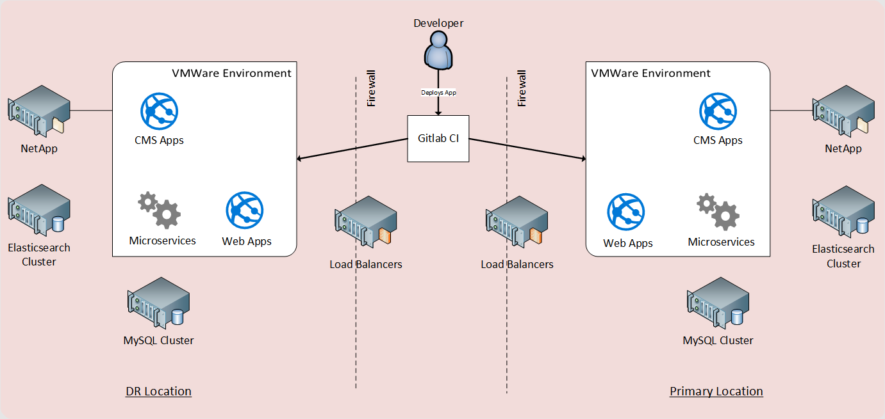
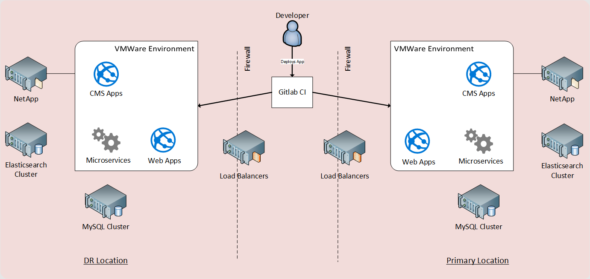

Imagine, if you will...
It's 2:30 am...
You're on a call with non-technical end users...
Testing a system that hasn't been used in months.
...it doesn't work.

Making Traditional Disaster Recovery Obsolete w/ AWS
or How I Learned to Stop Worrying and Trust the Cloud
Overview
- About American Public Media Group, Minnesota Public Radio, and Me
- MPR, Disaster Recovery, and Its Problems
- Moving From DR to SLA - The Solution
- Q and A
About American Public Media Group
About American Public Media
About Minnesota Public Radio
Minnesota Radio Stations
About Southern California Public Radio (KPCC)
5 different radio stations
- 89.3 - LA and Orange Counties
- 89.1 - Inland Empire
- 90.3 - Coachella Valley
- 93.3 - Palm Springs
- 89.5 - Ventura County
- 89.9 - Santa Barbara
About Me
Aaron M. Bond
- Developer at General Mills 4 Years
- Sysadmin at General Mills for 2 Years
- Sysadmin at MPR for 6 Years
- MPR Transitioning to More "DevOps"
MPR, Disaster Recovery, and Its Problems
- Goals of DR Project
- Architecture of DR
- Issues of this Approach
Goals of DR Project
- Co-located Datacenter
- Active / Passive Application Deployment
- Public Websites and Editing Live after Disaster in about 1 Hour
Architecture of Disaster Recovery
Application Design


Architecture of Disaster Recovery
 

Issues of this Approach
- Configuration and Code Drift
- Quarterly Test Requirements
- Requirement of Secondary Hardware
Active / Passive DR is Antiquated
Moving From DR to SLA
The Solution
- Goals of the AWS Cloud Project
- Architecture of Cloud at MPR
- Benefits
Goals of the AWS Cloud Project
- Host Public-Facing Websites and CMS Tools on AWS
- Move from "Disaster Recovery" to "Disaster Resilience"
- Utilize Infrastructure as Code to Build Environment
Cloud Architecture
Services Used
- VMWare VMs -> Kubernetes (EKS) & Containers
- MySQL -> RDS MySQL
- Elasticsearch Server -> Elastic.co Service
- Hardware Load Balancer -> ALBs
- Puppet -> Puppet, Terraform, Kubectl, EKSCtl
- Akamai -> CloudFront
- Let's Encrypt & Purchased Certs -> ACM